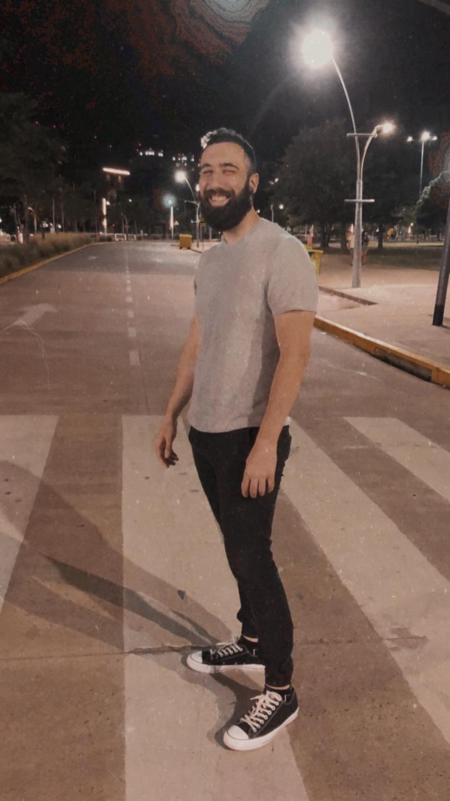

Emanuel Bolzico - CV
Estudios:
Experiencias laborales:
Skills:
Sobre Mi:
Cualquier situación que invite a la creatividad, llama mucho mi atención y motivación. Dentro de mis hobbies están el armado de motos y autos, el cual comparto con algunos amigos que ayudan a resolver cualquier situación que surja. El voley es una pasión muy fuerte en mi vida también, sobre todo por el ambiente de compañerismo y crecimiento que siempre encontré en este deporte. Yendo de la mano con la creatividad, la música es un cable a tierra para mí y la guitarra es donde canalizo toda esa energía. Creo que no llegaría a disfrutar de todas estas actividades si no pudiera compartirlas con otras personas, siento que esa parte agrega mucha más motivación a cualquiera de estas actividades.
Why I chosed Henry
I started full-stack web development in Henry, because I was missing the feeling I usted to have when I was in highschool and my two first jobs. It was like I could really see, with tangible results, the product of my work. I learned how to do something and when I applied the information in the field, it worked. It was even better when it didn't work and I needed to solve why it wasn't working. I like the feeling I get in the process of designing and working out the issues of the work, so I came back to a type of work where I can put in practice all that. My expectations about this carrer are high, I want to be part of a team that could open it's own way to a development team, where we could implement our own ideas and create programs that can make people's life easier, as well as the own company's time better and easier as well. I picture myself surrounded with people that want the same as me: to grow and get better in the field, to evolve our work constantly.